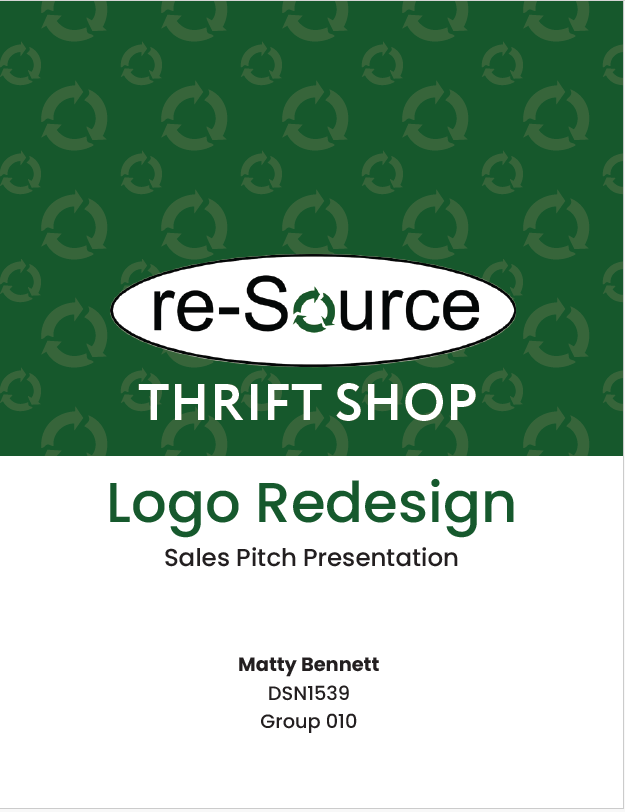
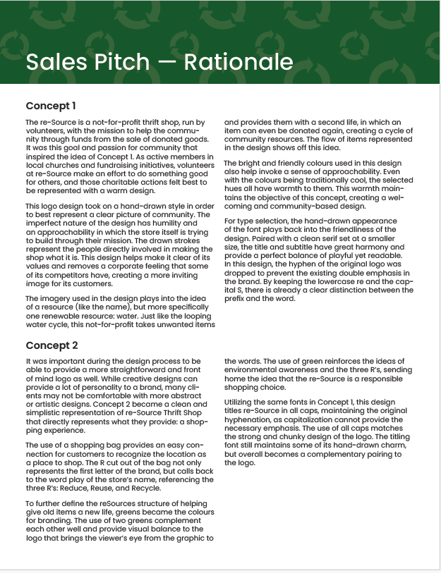
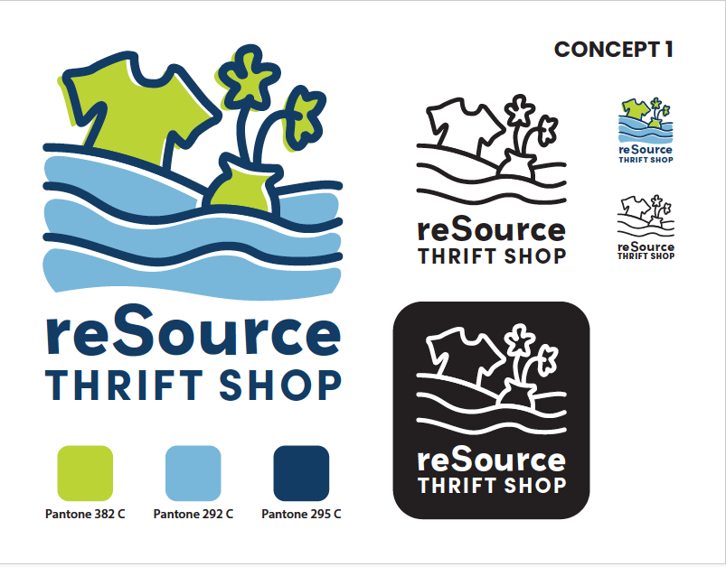
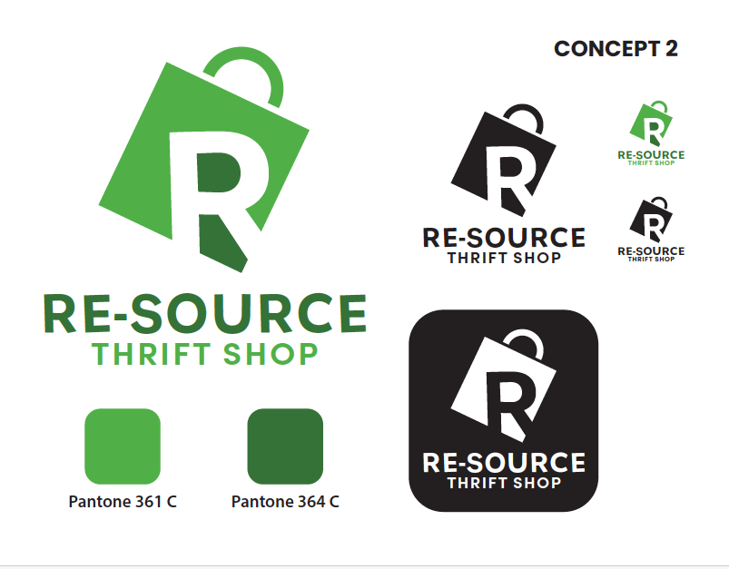
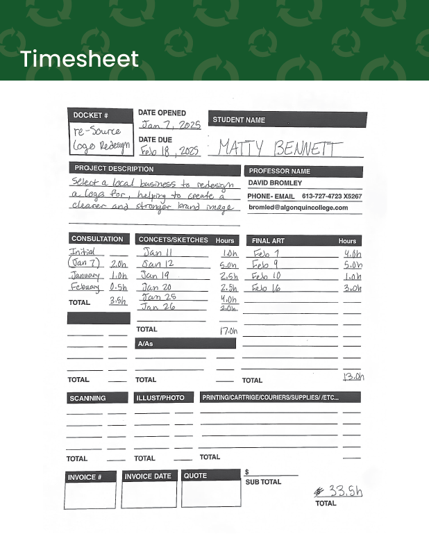

Weekly Schedule · Assignment 1: Logo Re-design
Agenda:
1) Check-in
2) Select final colours, wordmark typography and preparing for Presentation submission
3) Make adjustments and prepare for final submission
5) Recap
WEEK 6 - PRESENTATION 1
Two final comps for presentation submission
SUBMISSION Final presentation Instructions
Digital-PDF submission (11x8.5)
1) Page 1 - Title page (Includes original logo)
2) Page 2 - Sales Pitch outlining how the direction satisfies business and user goals.
3) Page 3 - Logo sheets of Option 1 as per layout example below
(Colour, 1/2 BW & Reversed, reduced to 1")
4) Page 4 - Logo sheets of Option 2 as per layout example below
(Colour, 1/2 BW & Reversed, reduced to 1")
5) Page 5 - ONE timesheet
You will present mockups in a professional manner to the class.
Please view pdf for a sample of the layout.
CRITERIA
You have to have two distinctive logos to present.
You will be showing both versions in colour, back & white and reverse.
You have to show reductions in both colour and BW (1" width x 1" height).
If you have a third design that you want to present you can do so.
WORKING ON FOR WEEK 7 - PRESENTATIONS
Final Comps for Presentation submission
You will present mockups in a professional manner to the class.
Please view pdf for a sample of the layout.
Submit complete presentation - title page - sales pitch - both concepts - time sheet
Image not in the export: 1.jpgImage not in the export: 21.jpgImage not in the export: 4.jpgImage not in the export: 3.jpgImage not in the export: 5.jpgImage not in the export: 6.jpg
FINAL SUBMISSION FOR BOTH CONCEPTS AFTER PRESENTATION
2PDF FILES AS PER SAMPLE SHOWN HERE - SUBMIT FILES TO Assignment 1 Part 1 - FINAL TWO CONCEPTS
Student PRESENTATION EXAMPLE
 
  
Some examples may not show the time sheet - you must include a time sheet in the presentation